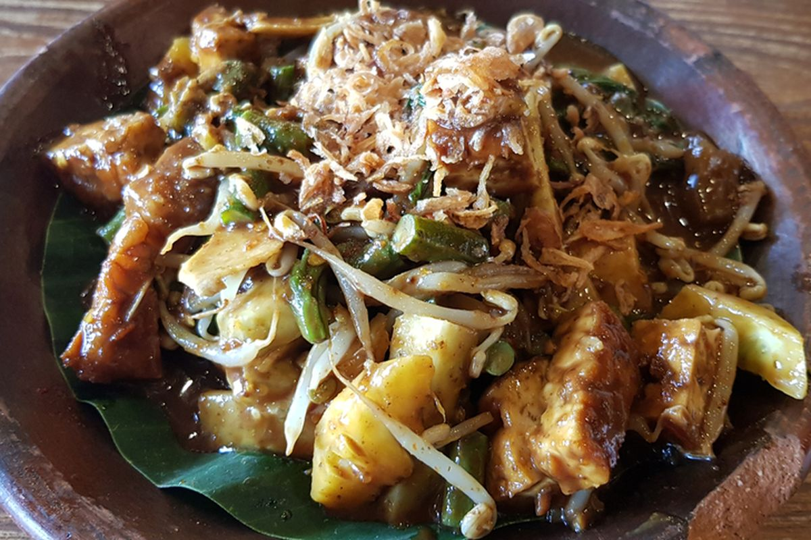
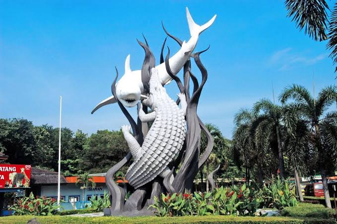
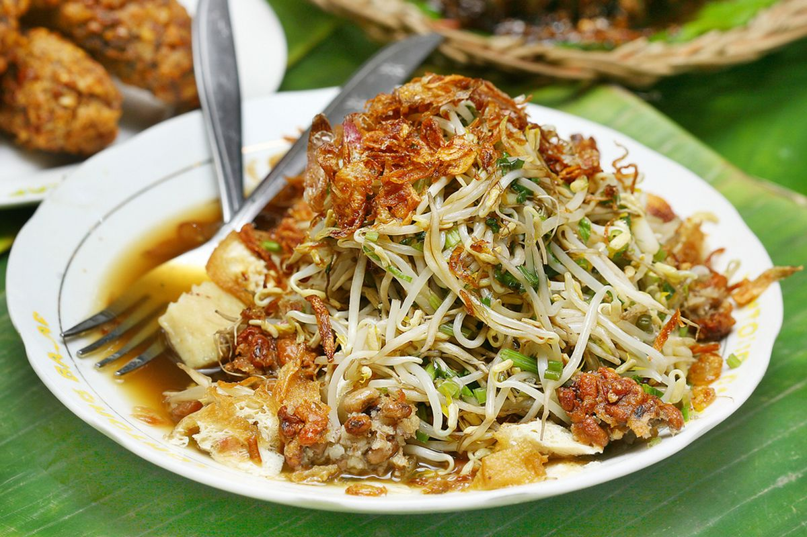
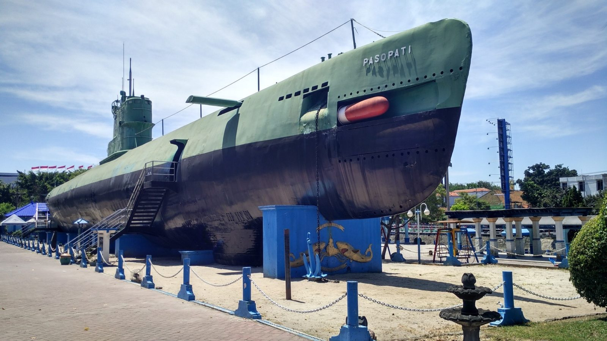
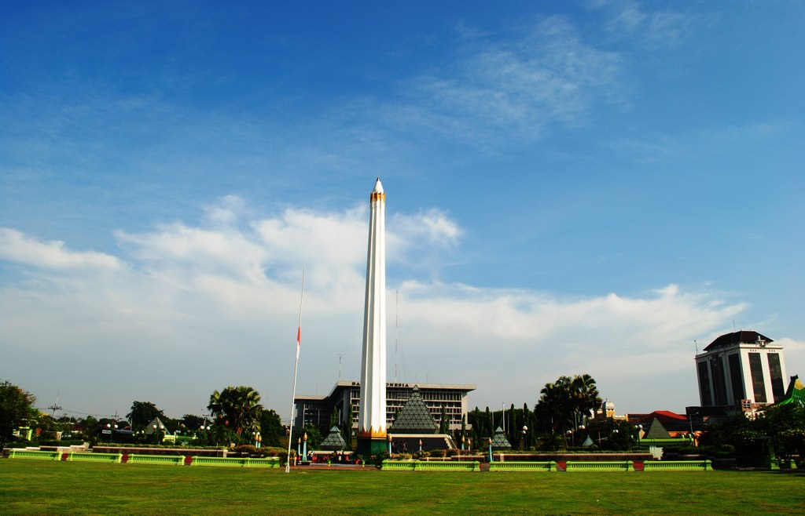
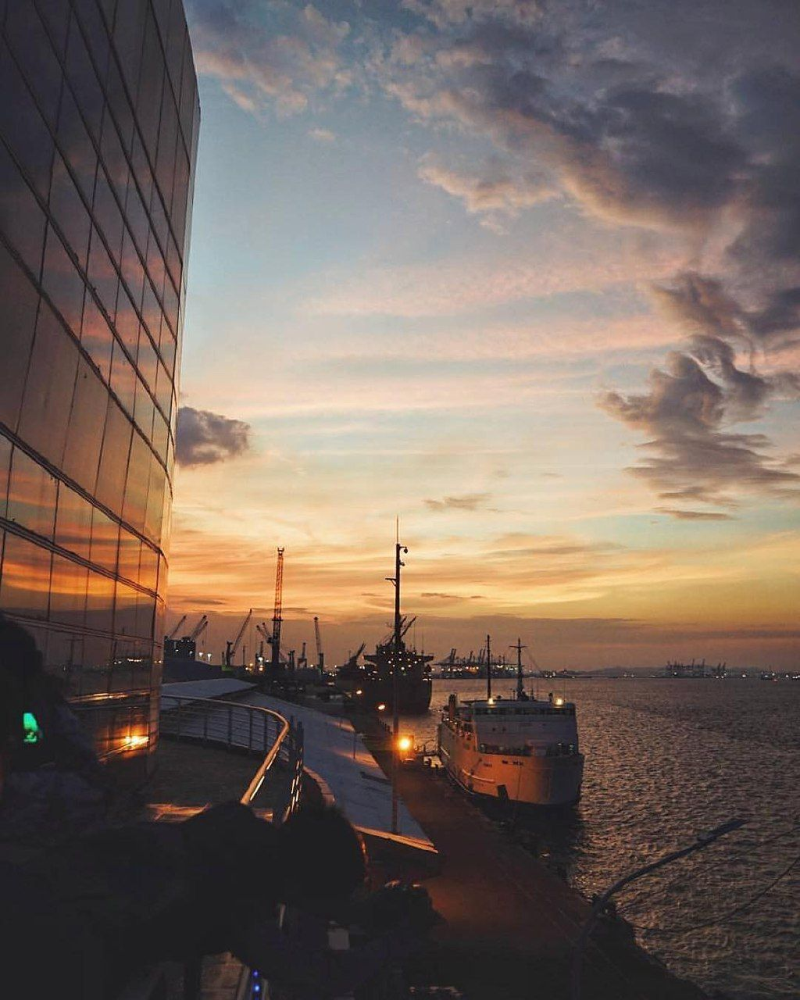

Rujak CingurRujak Cingur
A salad of vegetables, fruit, and sliced cow snout, tossed in a dark, savory shrimp-paste (petis) sauce.
Informatics student at Institut Teknologi Sepuluh Nopember. Born in Malang, raised in Surabaya. Two cities, two very different kinds of food, and this site is my guide to both.
About me Explore my hometowns
 Althea Rahmania Fitri
Althea Rahmania Fitri
I was born in Malang and grew up in Surabaya, so I call both cities home.

Surabaya is a port city on the Indonesian island of Java. A vibrant, sprawling metropolis, it mixes modern skyscrapers with canals and buildings from its Dutch colonial past. It has a thriving Chinatown and an Arab Quarter whose Ampel Mosque dates to the 15th century. The Tugu Pahlawan (Heroes Monument) honors the independence battles waged in Surabaya's streets in 1945.
Open in Google Maps
Rujak CingurA salad of vegetables, fruit, and sliced cow snout, tossed in a dark, savory shrimp-paste (petis) sauce.
A black beef soup colored by keluak nuts, served with rice, bean sprouts, salted egg, and sambal.

Lontong BalapRice cake with fried tofu, bean sprouts, and lentho, topped with sweet soy sauce, fried shallots, and sambal.

Monumen Kapal SelamA real submarine turned into a museum. You can walk through its narrow rooms.
View on Google
Tugu PahlawanThe Heroes Monument, honoring the 1945 battle for independence fought in Surabaya.
View on Google
Surabaya North QuayA waterfront spot by the harbor for walking, photos, and watching the ships.
View on Google